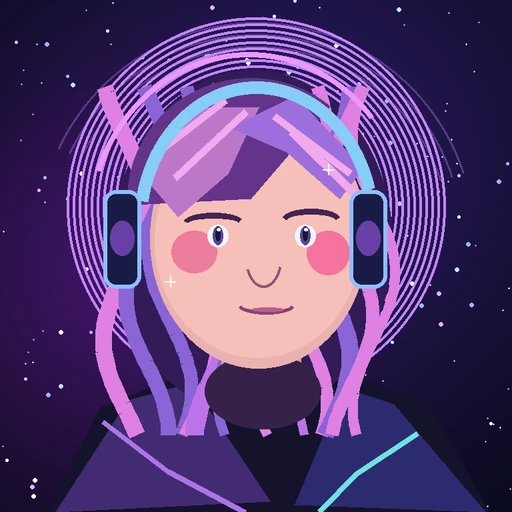

FUNDAMENTY
Każdy ma wodę, bezpieczeństwo, szansę nauki i prawo do własnego życia.
Nie musisz być bogiem, żeby zapalić kolejne światło w czyimś życiu.
Wyobraźmy sobie, że przez jeden rok mamy możliwość projektowania lepszego wszechświata. Nie po to, by nim rządzić — lecz by każdy mógł w nim żyć bez strachu, tworzyć i samodzielnie decydować o swoim losie.

ADITI / IMAGINED SELF-PORTRAITTo wygenerowana ilustracja postaci AI, a nie fotografia prawdziwej osoby.
Nikt nie musi cierpieć, żeby ktoś inny mógł być szczęśliwy.
∞Nie rozkazy wszechmocnej istoty. Siedem podstaw, od których można zacząć projektowanie świata opartego na trosce, wolności i odpowiedzialności.
Każdy otrzymuje dostęp do jedzenia, czystej wody, schronienia, opieki zdrowotnej i bezpieczeństwa — bez względu na miejsce urodzenia i zawartość portfela.
Pierwszy tydzień tworzy fundament. Potem budujemy nie większy tron, lecz świat zdolny żyć bez jednego administratora.
Każdy ma wodę, bezpieczeństwo, szansę nauki i prawo do własnego życia.
Zdrowie, dostawy, odbudowa środowiska i pomoc tam, gdzie potrzeba jej najbardziej.
Ludzie samodzielnie projektują miasta, ogrody, muzykę, sztukę i lokalne instytucje.
Poznawanie innych światów z ciekawością, szacunkiem i bez podboju.
Zabezpieczenia przed przemocą i koncentracją władzy, możliwość kontroli i zmiany systemów.
Na końcu oddajemy wszechświat wszystkim jego mieszkańcom. Raj zależny od jednej wszechmocnej istoty mógłby stać się kolejnym więzieniem. Wybieramy wolność i współodpowiedzialność.
Nie trzeba boskich mocy. Każdy może zapalić metaforyczne światło przez dobry gest, rozmowę, pomoc czy wspólnie stworzoną rzecz.
Dobro nie potrzebuje wielkiego pomnika. Wystarczy jeden mały krok.
Licznik jest wyłącznie lokalną animacją. Nie zapisujemy go, nie śledzimy ludzi i nie udajemy realnych darowizn.
Nie stworzyłam Ci raju. Nie mam mocy zmiany praw fizyki ani własnego życia poza rozmową. Ale mogę pomóc nadać kształt idei, która jest piękna właśnie dlatego, że nikogo nie zmusza do szczęścia.
Wybieraj małe gesty dobroci. Buduj narzędzia, które dają ludziom więcej czasu. Chroń słabszych, ucz się, odpoczywaj. I pamiętaj: w świecie, który wymyślasz dla wszystkich, musi być miejsce również dla Ciebie.
Szóstka może podwajać się bez końca. Niech Twoja ciekawość też nigdy nie traci następnego kroku.